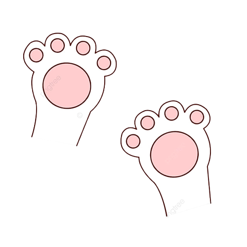
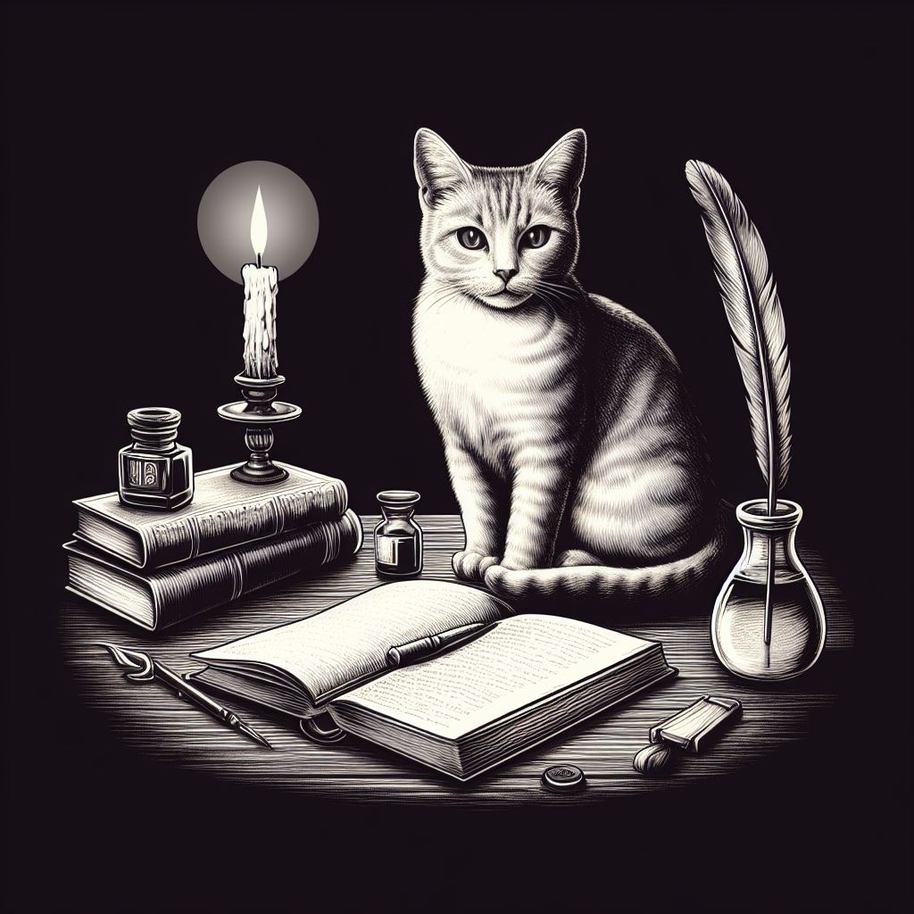

¡Bienvenido/a a Seven Lives, amante de los felinos!
Desde las majestuosas pirámides de Egipto, donde los gatos eran venerados como dioses, hasta los cómodos sofás de nuestras casas, estos seres peludos han sido protagonistas de incontables capítulos en la historia de la humanidad. Aquí, en Seven Lives, nos sumergimos en el fascinante mundo de los gatos, explorando no sólo su rica historia, sino también aspectos cruciales para su bienestar y salud.
Así que ya sea que seas un apasionado de la historia gatuna, un preocupado dueño buscando consejos de salud, o simplemente alguien curioso por aprender más sobre estos maravillosos animales, ¡estás en el lugar correcto! Únete a nosotros en esta aventura felina y descubre todo lo que hay que saber sobre nuestros compañeros de bigotes.

Antes de continuar, ¿te gustaría conocer algunos datos curiosos sobre los gatos? ¡Adelante!
{{ gato.texto }}
Adéntrate en el Mundo Felino: descubre su historia, el cuidado que necesitan y si tienes sugerencias, ¡no dudes en contactarnos!

